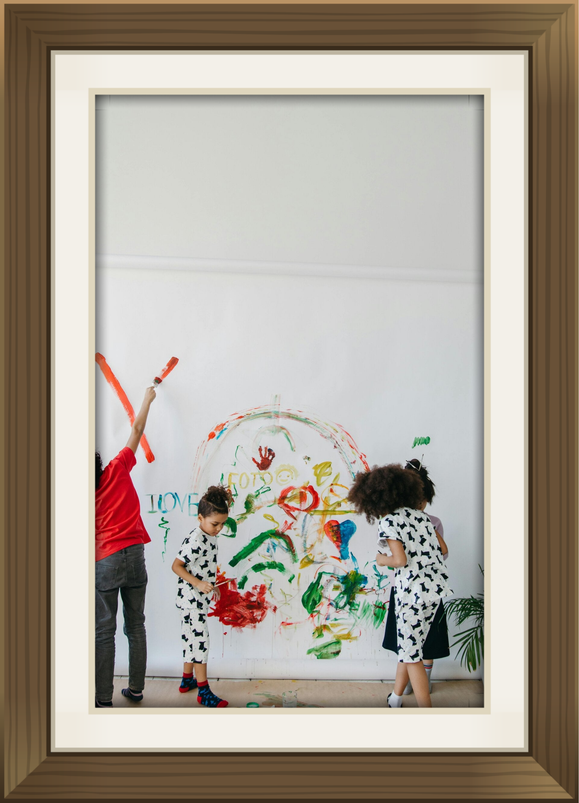

The 5 Core Montessori Curriculum Areas
Dr. Maria Montessori identified that young children possess an "absorbent mind". Our environment is structured across 5 key developmental areas:
1. Practical Life
Pouring, sweeping, baking, buttoning, and caring for living plants.
2. Sensorial
Pink tower dimensions, color tablets, sound cylinders, and textures.
3. Mathematics
Hands-on golden beads, decimal system, number rods, and counting trays.
4. Language & Literacy
Sandpaper letters, phonics sound games, moveable alphabet, and stories.
5. Culture, Botany & Science
Puzzle maps, landforms, animal life cycles, botanical specimens, music, and creative arts.
Authentic Hands-On Materials
Our Montessori equipment is crafted from natural wood and self-correcting materials, inviting children to manipulate, discover, and master concepts through sensory experience.
From the Pink Tower to binomial cubes, every material is purposeful, beautiful, and presented by qualified practitioners.

Uninterrupted Work Cycles
Children are given uninterrupted three-hour work periods to dive deeply into tasks without arbitrary bell rings or abrupt transitions.
Control of Error
Every piece of Montessori apparatus is engineered to show children whether they have succeeded, fostering self-correction without shame.
Mixed-Age Community
Younger children learn by observing older peers, while older children reinforce their own mastery by mentoring younger classmates.